Flagged pause investigation
zh001_zf_001_control
MFA 170 ms · RMS 215 ms · RMS_endpoint_inside_first_HMM_phone
RMS resumes 32.5 ms after HMM, inside its initial /ɥ/ interval. Consistent with low-energy phone inclusion; the HMM label is a model hypothesis, not independent truth.
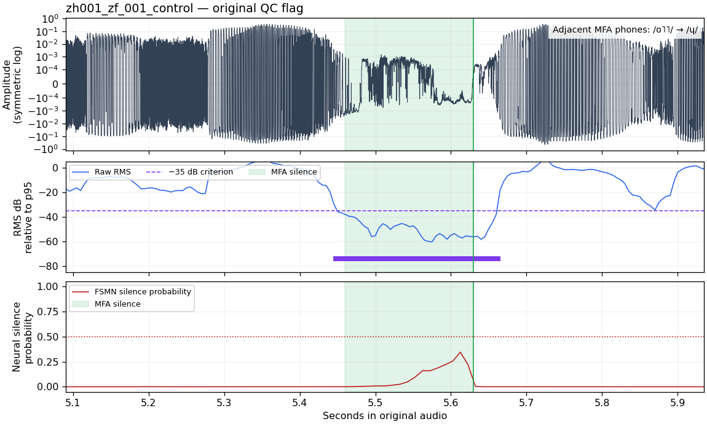
zh001_zf_001_joke
MFA 100 ms · RMS 240 ms · RMS_endpoint_inside_first_HMM_phone
RMS resumes 107.5 ms after HMM, inside its initial /f/ interval. Consistent with low-energy phone inclusion; the HMM label is a model hypothesis, not independent truth.
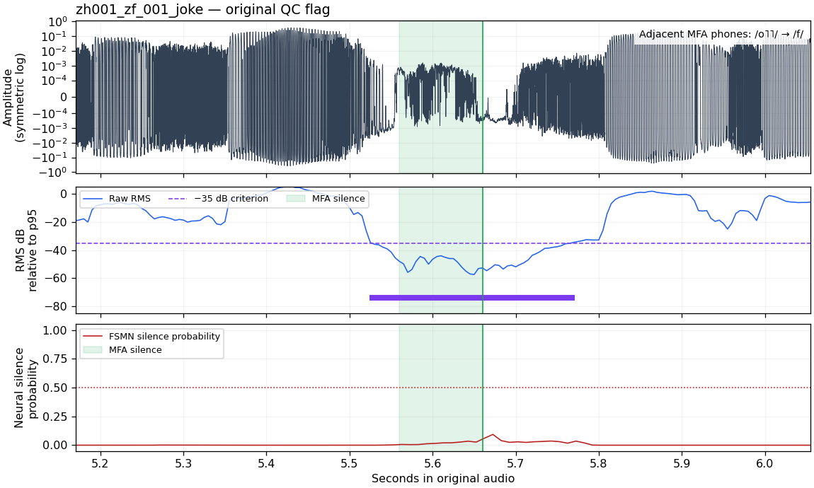
zh002_zf_001_control
MFA 160 ms · RMS 210 ms · RMS_endpoint_inside_first_HMM_phone
RMS resumes 42.5 ms after HMM, inside its initial /n/ interval. Consistent with low-energy phone inclusion; the HMM label is a model hypothesis, not independent truth.
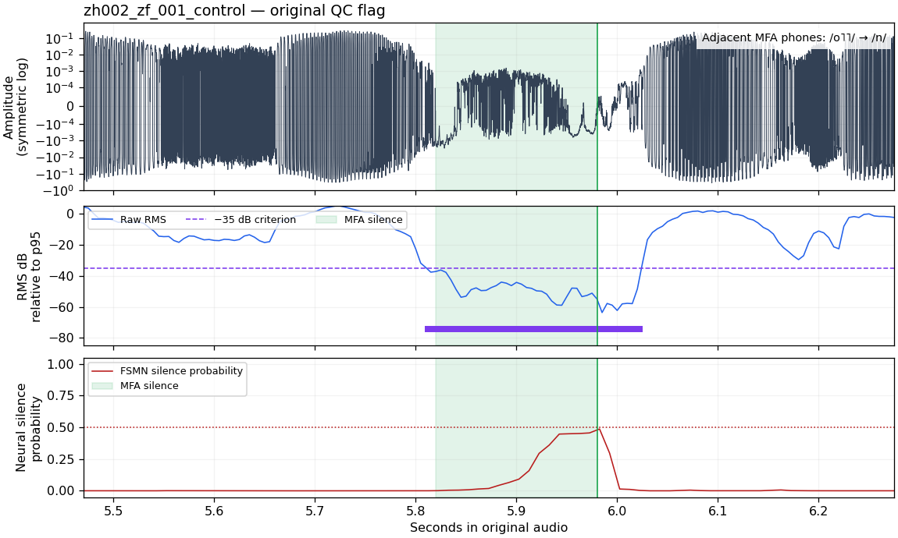
zh002_zf_001_joke
MFA 170 ms · RMS 210 ms · RMS_endpoint_inside_first_HMM_phone
RMS resumes 37.5 ms after HMM, inside its initial /n/ interval. Consistent with low-energy phone inclusion; the HMM label is a model hypothesis, not independent truth.
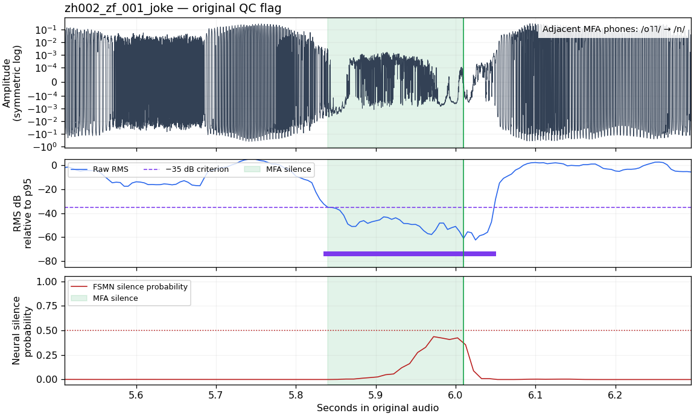
zh003_zf_001_control
MFA 250 ms · RMS 325 ms · RMS_endpoint_inside_first_HMM_phone
RMS resumes 42.5 ms after HMM, inside its initial /tɕ/ interval. Consistent with low-energy phone inclusion; the HMM label is a model hypothesis, not independent truth.
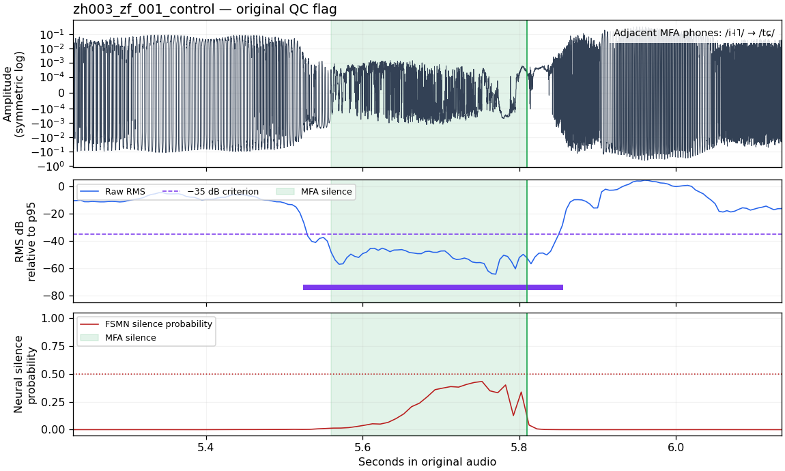
zh003_zf_001_joke
MFA 230 ms · RMS 295 ms · RMS_endpoint_inside_first_HMM_phone
RMS resumes 37.5 ms after HMM, inside its initial /tɕ/ interval. Consistent with low-energy phone inclusion; the HMM label is a model hypothesis, not independent truth.
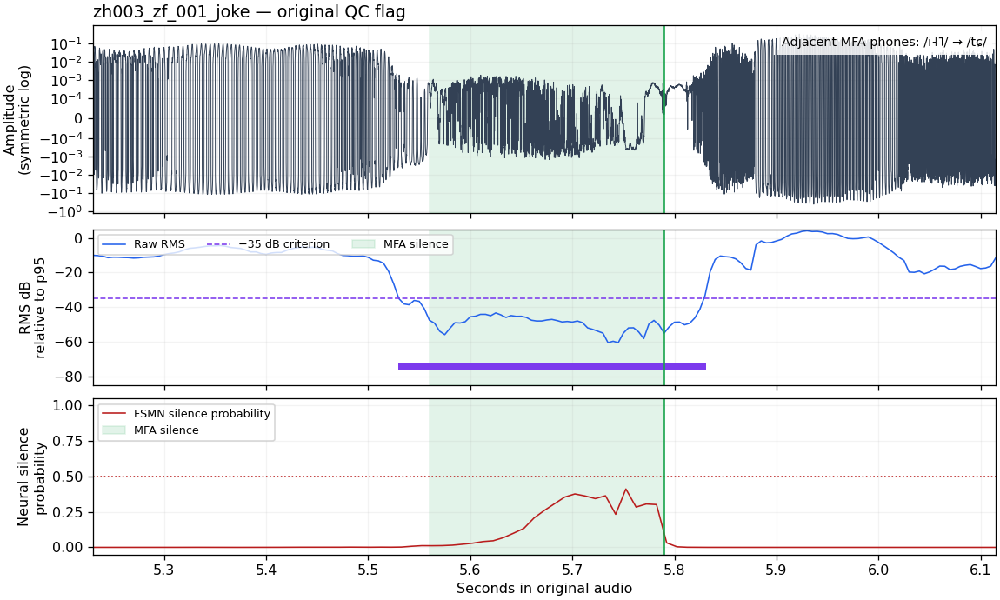
zh004_zf_001_control
MFA 250 ms · RMS 305 ms · RMS_endpoint_inside_first_HMM_phone
RMS resumes 57.5 ms after HMM, inside its initial /ʂ/ interval. Consistent with low-energy phone inclusion; the HMM label is a model hypothesis, not independent truth.
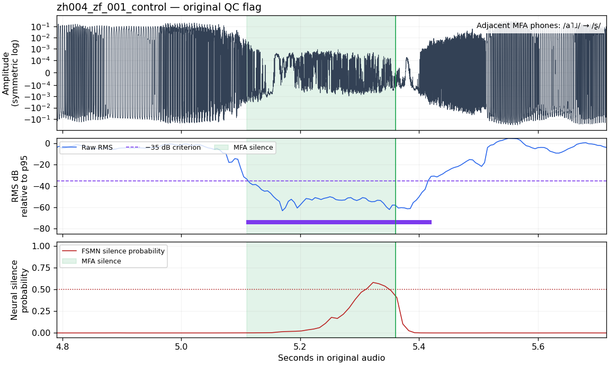
zh004_zf_001_joke
MFA 260 ms · RMS 310 ms · RMS_endpoint_inside_first_HMM_phone
RMS resumes 52.5 ms after HMM, inside its initial /ʂ/ interval. Consistent with low-energy phone inclusion; the HMM label is a model hypothesis, not independent truth.
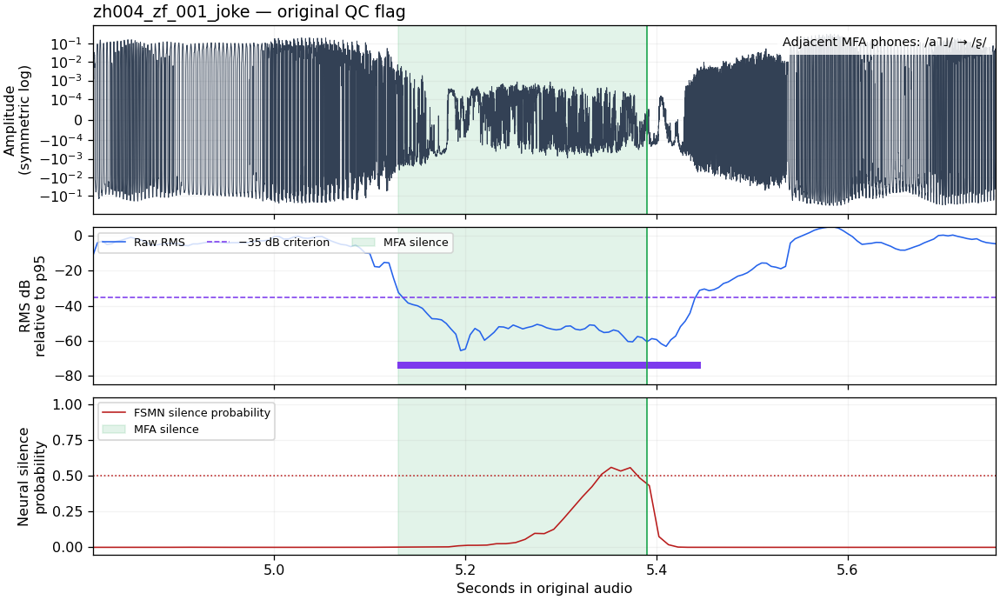
zh005_zf_001_control
MFA 110 ms · RMS 180 ms · RMS_endpoint_inside_first_HMM_phone
RMS resumes 82.5 ms after HMM, inside its initial /x/ interval. Consistent with low-energy phone inclusion; the HMM label is a model hypothesis, not independent truth.
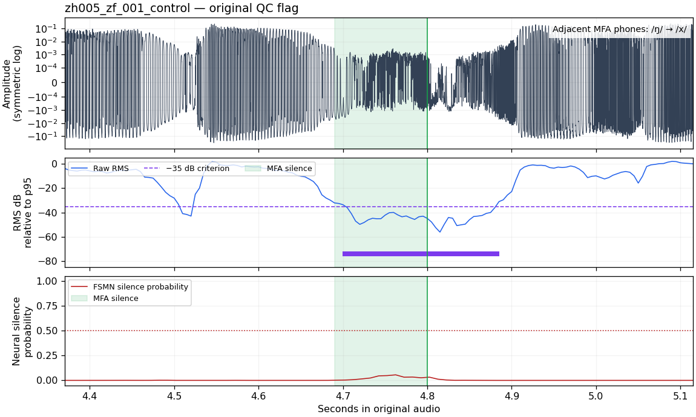
zh005_zf_001_joke
MFA 110 ms · RMS 140 ms · prior_duration_agreement
Passed the original duration-only comparison; natural boundary accuracy remains unverified.
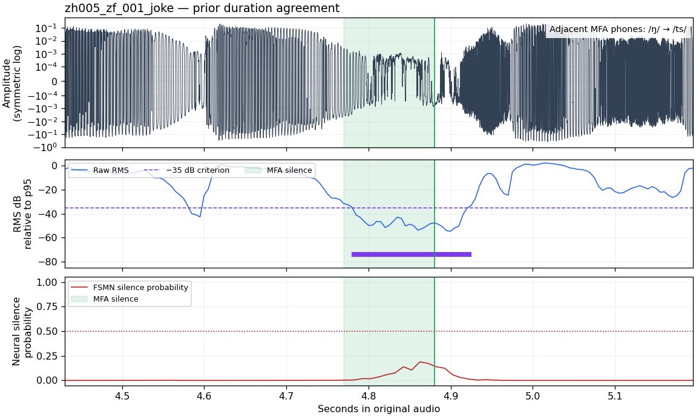
zh006_zf_001_control
MFA 60 ms · RMS 110 ms · RMS_endpoint_inside_first_HMM_phone
RMS resumes 47.5 ms after HMM, inside its initial /ʈʂ/ interval. Consistent with low-energy phone inclusion; the HMM label is a model hypothesis, not independent truth.
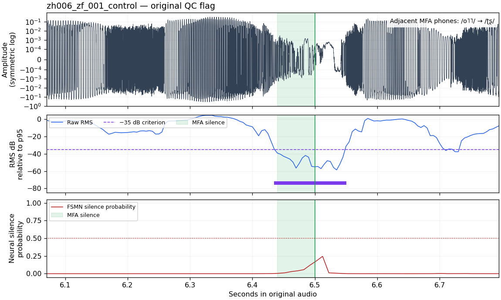
zh006_zf_001_joke
MFA 30 ms · RMS 90 ms · RMS_endpoint_inside_first_HMM_phone
RMS resumes 42.5 ms after HMM, inside its initial /w/ interval. Consistent with low-energy phone inclusion; the HMM label is a model hypothesis, not independent truth.
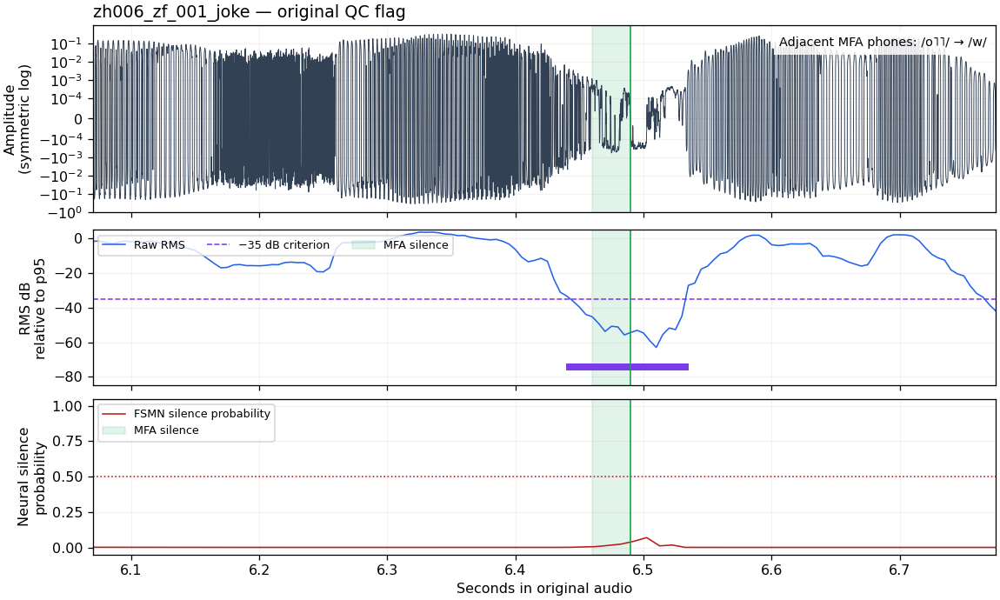
zh007_zf_001_control
MFA 240 ms · RMS 290 ms · RMS_endpoint_inside_first_HMM_phone
RMS resumes 42.5 ms after HMM, inside its initial /n/ interval. Consistent with low-energy phone inclusion; the HMM label is a model hypothesis, not independent truth.
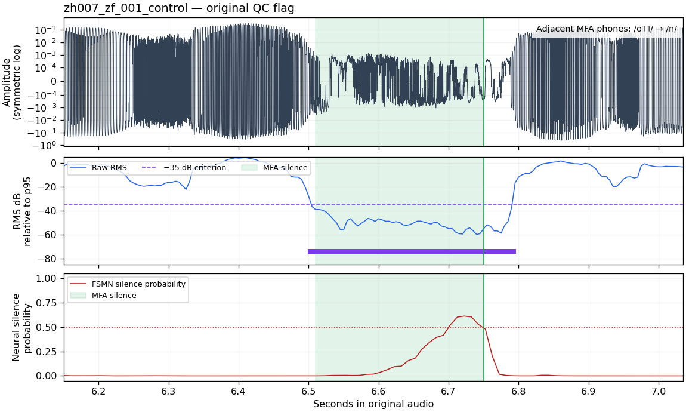
zh007_zf_001_joke
MFA 190 ms · RMS 240 ms · RMS_endpoint_inside_first_HMM_phone
RMS resumes 47.5 ms after HMM, inside its initial /n/ interval. Consistent with low-energy phone inclusion; the HMM label is a model hypothesis, not independent truth.
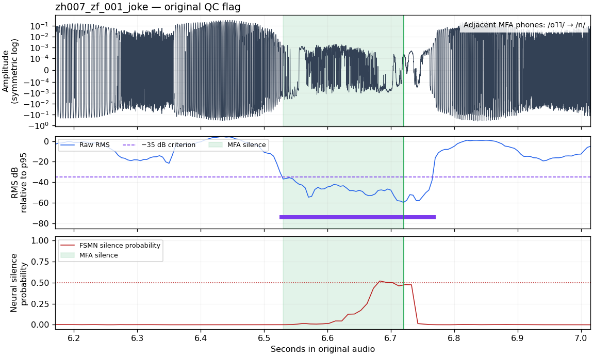
zh008_zf_001_control
MFA 270 ms · RMS 320 ms · RMS_endpoint_inside_first_HMM_phone
RMS resumes 42.5 ms after HMM, inside its initial /n/ interval. Consistent with low-energy phone inclusion; the HMM label is a model hypothesis, not independent truth.
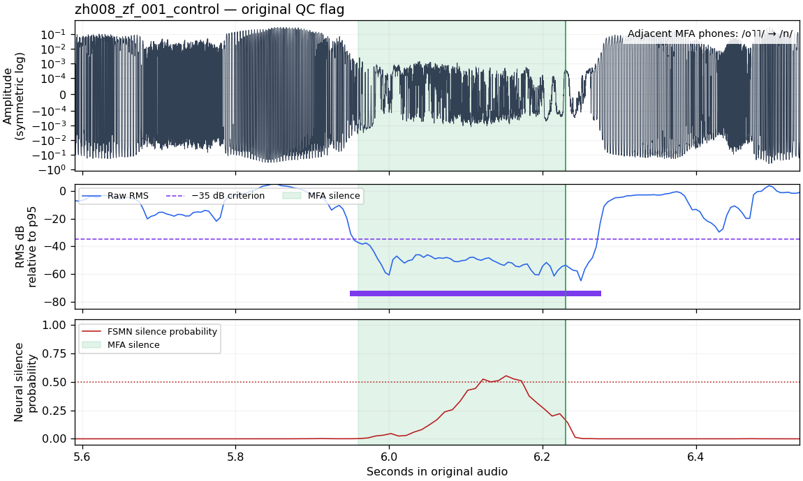
zh008_zf_001_joke
MFA 260 ms · RMS 315 ms · RMS_endpoint_inside_first_HMM_phone
RMS resumes 42.5 ms after HMM, inside its initial /n/ interval. Consistent with low-energy phone inclusion; the HMM label is a model hypothesis, not independent truth.
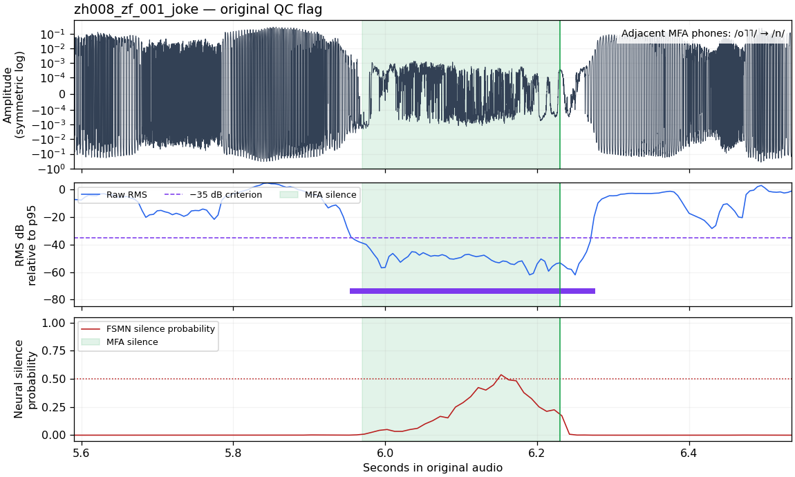
zh009_zf_001_control
MFA 100 ms · RMS 150 ms · RMS_endpoint_inside_first_HMM_phone
RMS resumes 37.5 ms after HMM, inside its initial /ts/ interval. Consistent with low-energy phone inclusion; the HMM label is a model hypothesis, not independent truth.
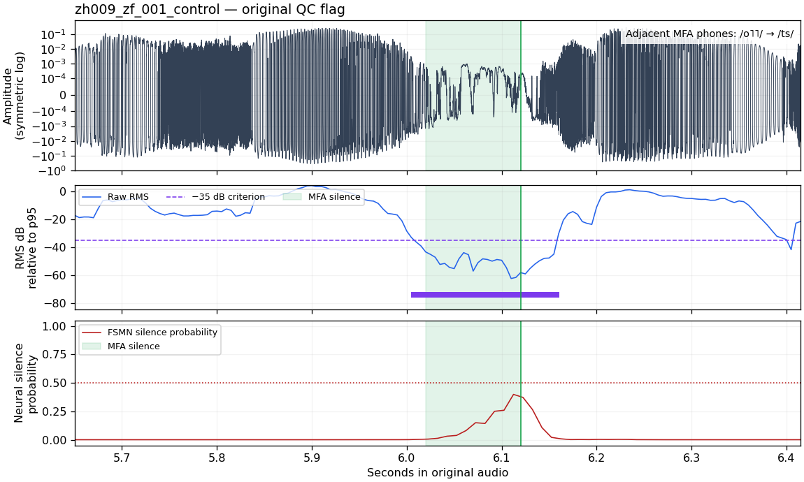
zh009_zf_001_joke
MFA 100 ms · RMS 150 ms · RMS_endpoint_inside_first_HMM_phone
RMS resumes 37.5 ms after HMM, inside its initial /ts/ interval. Consistent with low-energy phone inclusion; the HMM label is a model hypothesis, not independent truth.
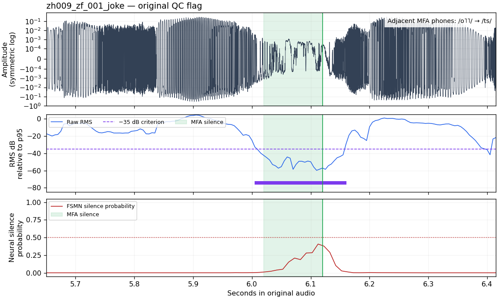
zh010_zf_001_control
MFA 180 ms · RMS 210 ms · prior_duration_agreement
Passed the original duration-only comparison; natural boundary accuracy remains unverified.
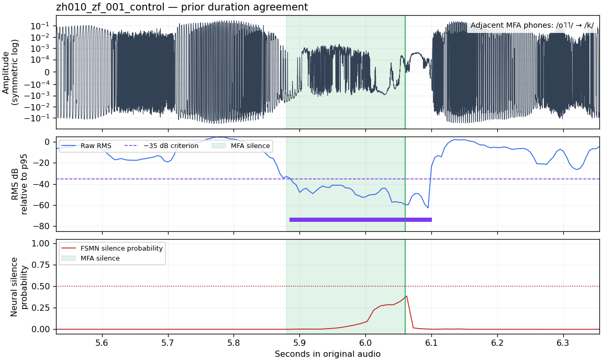
zh010_zf_001_joke
MFA 180 ms · RMS 220 ms · RMS_endpoint_inside_first_HMM_phone
RMS resumes 37.5 ms after HMM, inside its initial /p/ interval. Consistent with low-energy phone inclusion; the HMM label is a model hypothesis, not independent truth.
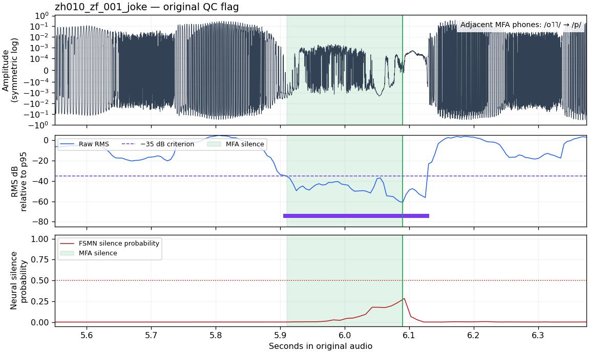
zh001_zm_010_control
MFA 180 ms · RMS ambiguous · fragmented_RMS_subsonic_energy
Multiple quiet intervals; the HMM-region spectrum peaks at 16.7 Hz. Filtering does not establish an accurate pause.
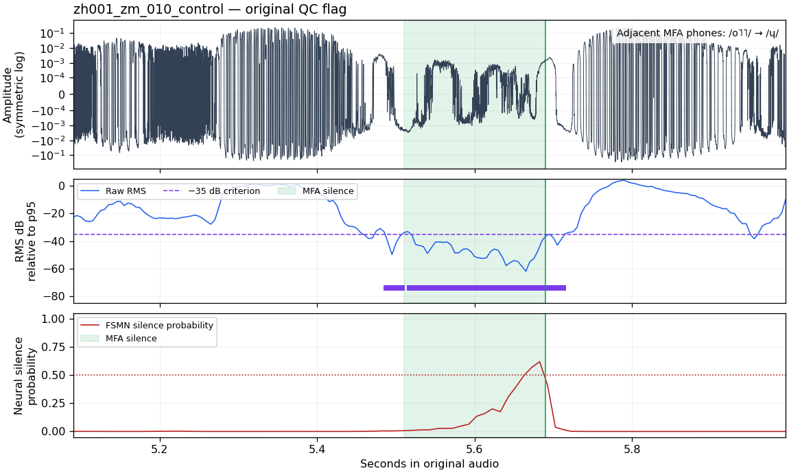
zh001_zm_010_joke
MFA 110 ms · RMS 135 ms · prior_duration_agreement
Passed the original duration-only comparison; natural boundary accuracy remains unverified.
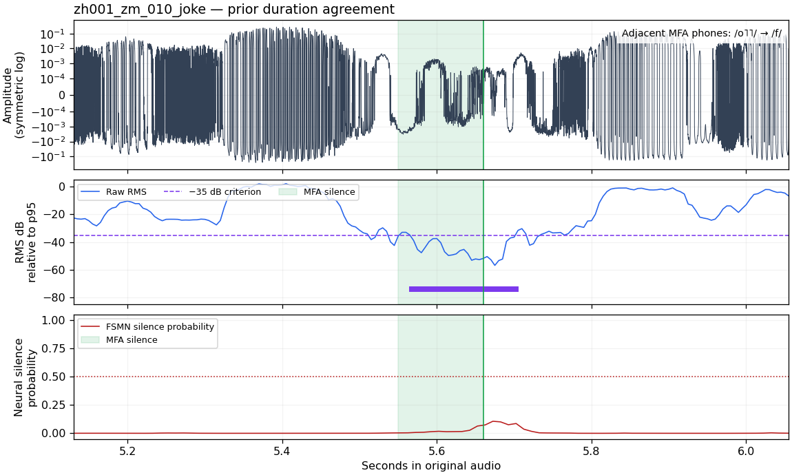
zh002_zm_010_control
MFA 150 ms · RMS 125 ms · prior_duration_agreement
Passed the original duration-only comparison; natural boundary accuracy remains unverified.
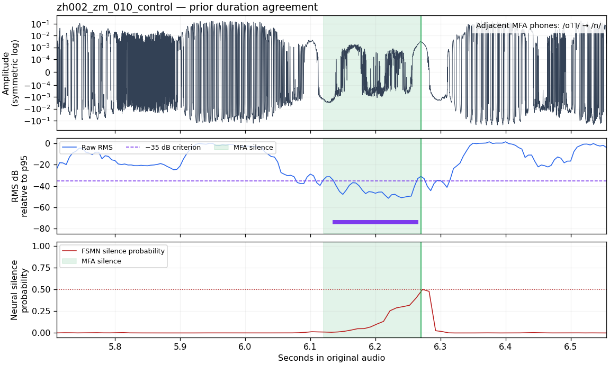
zh002_zm_010_joke
MFA 200 ms · RMS ambiguous · fragmented_RMS_subsonic_energy
Multiple quiet intervals; the HMM-region spectrum peaks at 10.0 Hz. Filtering does not establish an accurate pause.
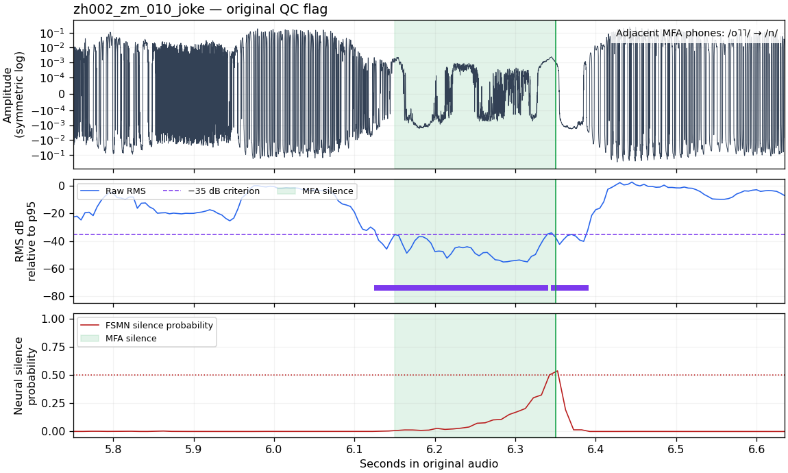
zh003_zm_010_control
MFA 240 ms · RMS 290 ms · RMS_endpoint_inside_first_HMM_phone
RMS resumes 52.5 ms after HMM, inside its initial /tɕ/ interval. Consistent with low-energy phone inclusion; the HMM label is a model hypothesis, not independent truth.
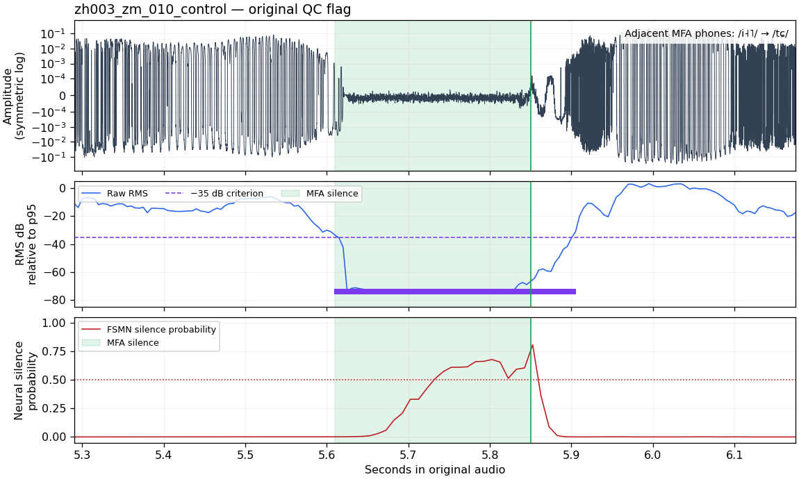
zh003_zm_010_joke
MFA 230 ms · RMS 290 ms · RMS_endpoint_inside_first_HMM_phone
RMS resumes 52.5 ms after HMM, inside its initial /tɕ/ interval. Consistent with low-energy phone inclusion; the HMM label is a model hypothesis, not independent truth.
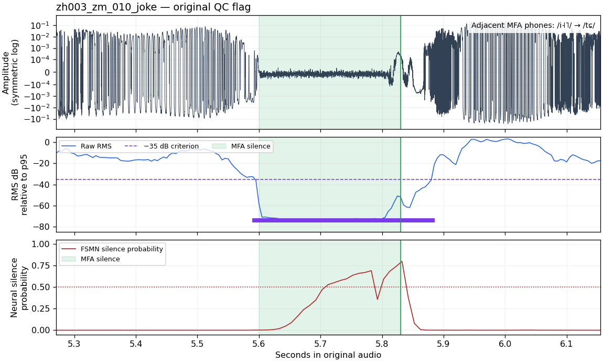
zh004_zm_010_control
MFA 280 ms · RMS 290 ms · prior_duration_agreement
Passed the original duration-only comparison; natural boundary accuracy remains unverified.
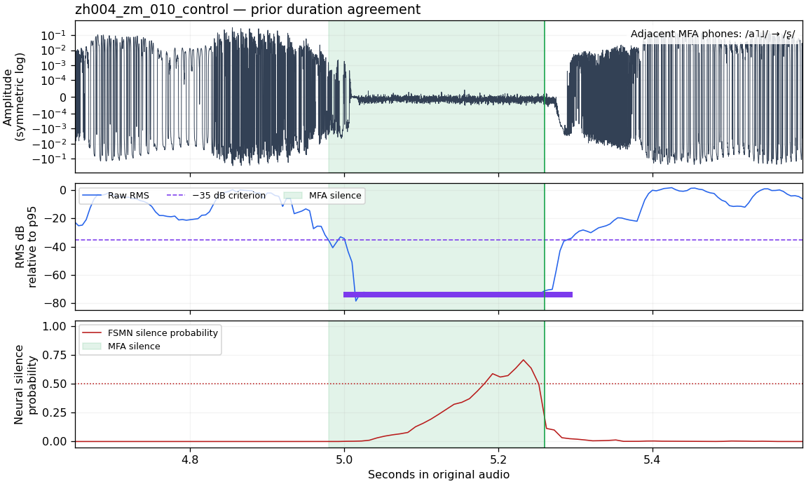
zh004_zm_010_joke
MFA 280 ms · RMS 290 ms · prior_duration_agreement
Passed the original duration-only comparison; natural boundary accuracy remains unverified.
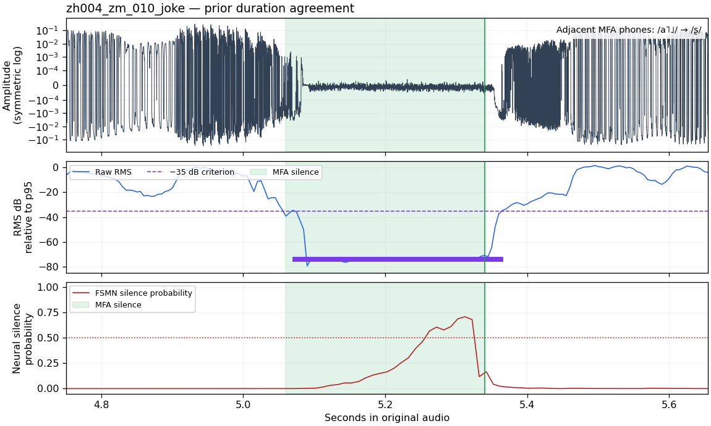
zh005_zm_010_control
MFA 140 ms · RMS 105 ms · RMS_endpoint_inside_first_HMM_phone
RMS resumes 37.5 ms after HMM, inside its initial /x/ interval. Consistent with low-energy phone inclusion; the HMM label is a model hypothesis, not independent truth.
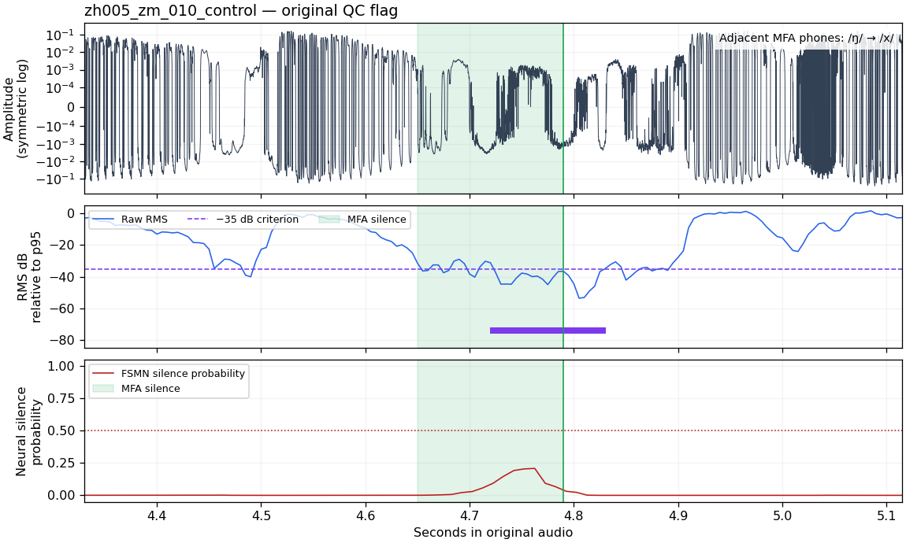
zh005_zm_010_joke
MFA 170 ms · RMS ambiguous · fragmented_RMS_subsonic_energy
Multiple quiet intervals; the HMM-region spectrum peaks at 17.6 Hz. Filtering does not establish an accurate pause.
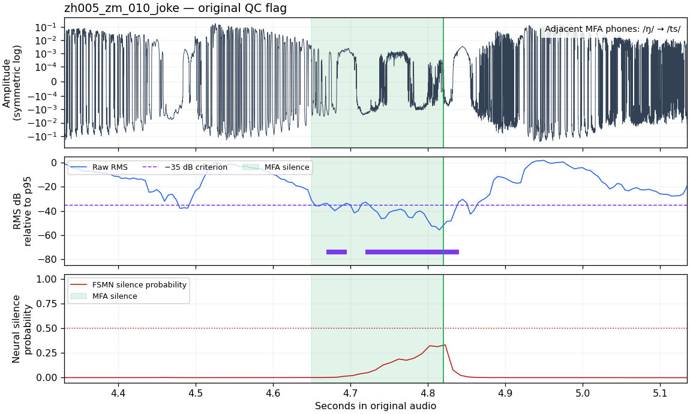
zh006_zm_010_control
MFA 50 ms · RMS 105 ms · RMS_endpoint_inside_first_HMM_phone
RMS resumes 52.5 ms after HMM, inside its initial /ʈʂ/ interval. Consistent with low-energy phone inclusion; the HMM label is a model hypothesis, not independent truth.
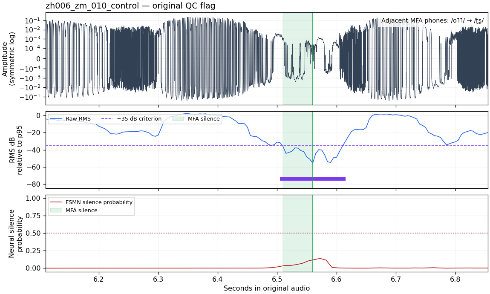
zh006_zm_010_joke
MFA 40 ms · RMS 95 ms · RMS_endpoint_inside_first_HMM_phone
RMS resumes 42.5 ms after HMM, inside its initial /w/ interval. Consistent with low-energy phone inclusion; the HMM label is a model hypothesis, not independent truth.
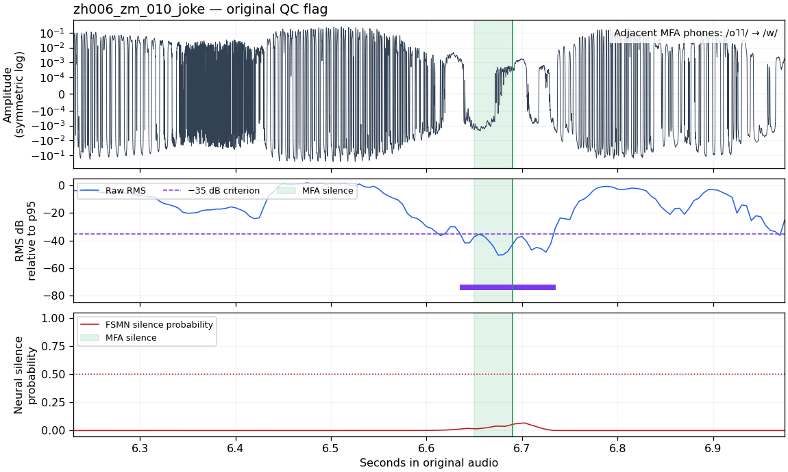
zh007_zm_010_control
MFA 280 ms · RMS 335 ms · RMS_endpoint_inside_first_HMM_phone
RMS resumes 37.5 ms after HMM, inside its initial /n/ interval. Consistent with low-energy phone inclusion; the HMM label is a model hypothesis, not independent truth.
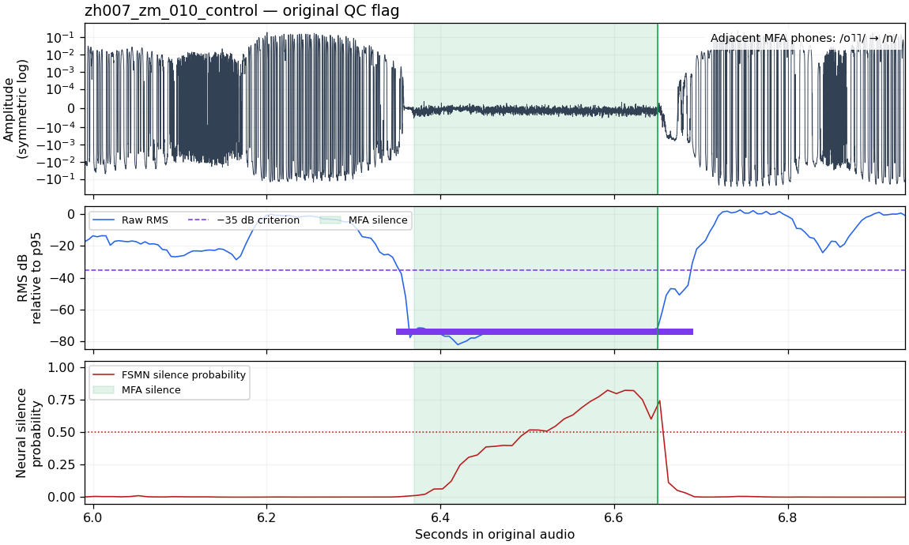
zh007_zm_010_joke
MFA 290 ms · RMS 335 ms · RMS_endpoint_inside_first_HMM_phone
RMS resumes 32.5 ms after HMM, inside its initial /n/ interval. Consistent with low-energy phone inclusion; the HMM label is a model hypothesis, not independent truth.
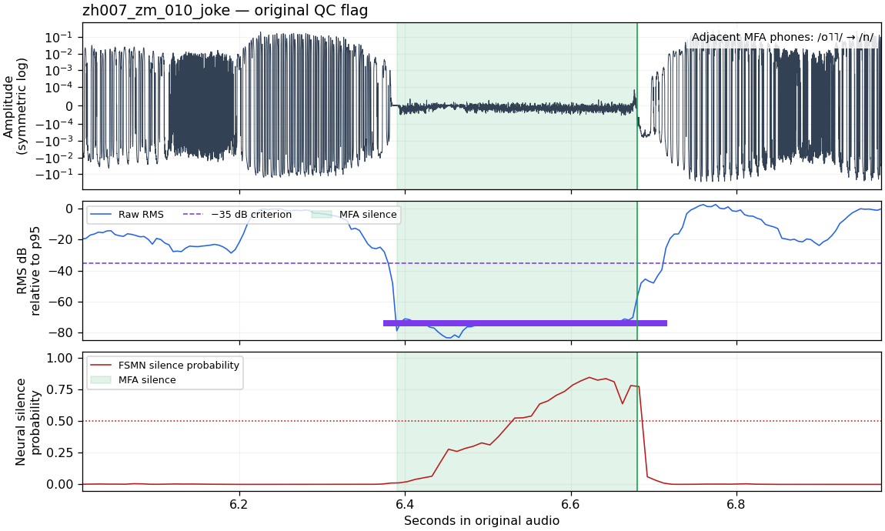
zh008_zm_010_control
MFA 290 ms · RMS 340 ms · RMS_endpoint_inside_first_HMM_phone
RMS resumes 42.5 ms after HMM, inside its initial /n/ interval. Consistent with low-energy phone inclusion; the HMM label is a model hypothesis, not independent truth.
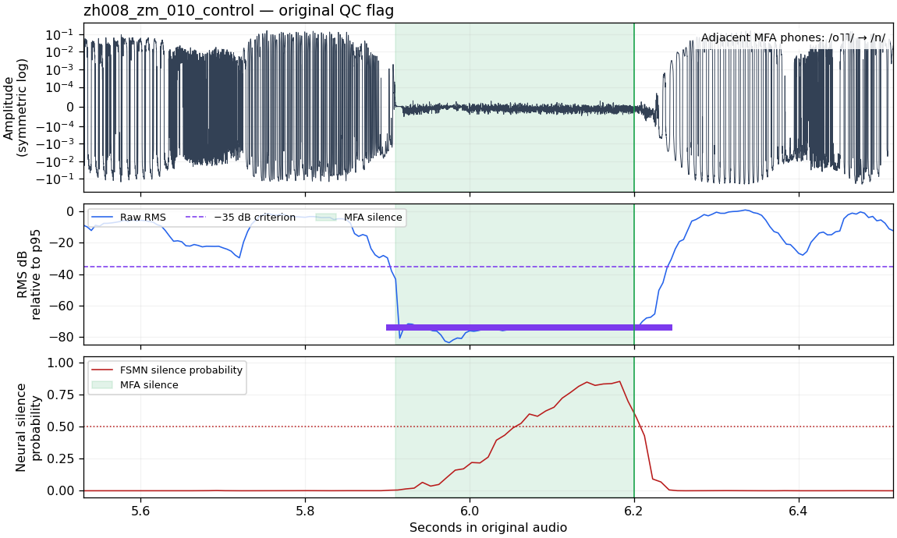
zh008_zm_010_joke
MFA 280 ms · RMS 335 ms · RMS_endpoint_inside_first_HMM_phone
RMS resumes 47.5 ms after HMM, inside its initial /n/ interval. Consistent with low-energy phone inclusion; the HMM label is a model hypothesis, not independent truth.
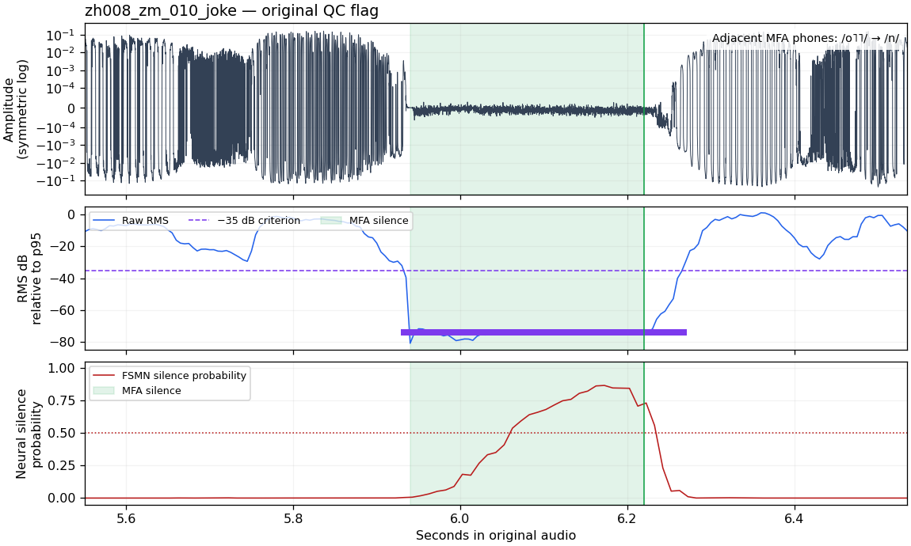
zh009_zm_010_control
MFA 80 ms · RMS 120 ms · RMS_endpoint_inside_first_HMM_phone
RMS resumes 52.5 ms after HMM, inside its initial /ts/ interval. Consistent with low-energy phone inclusion; the HMM label is a model hypothesis, not independent truth.
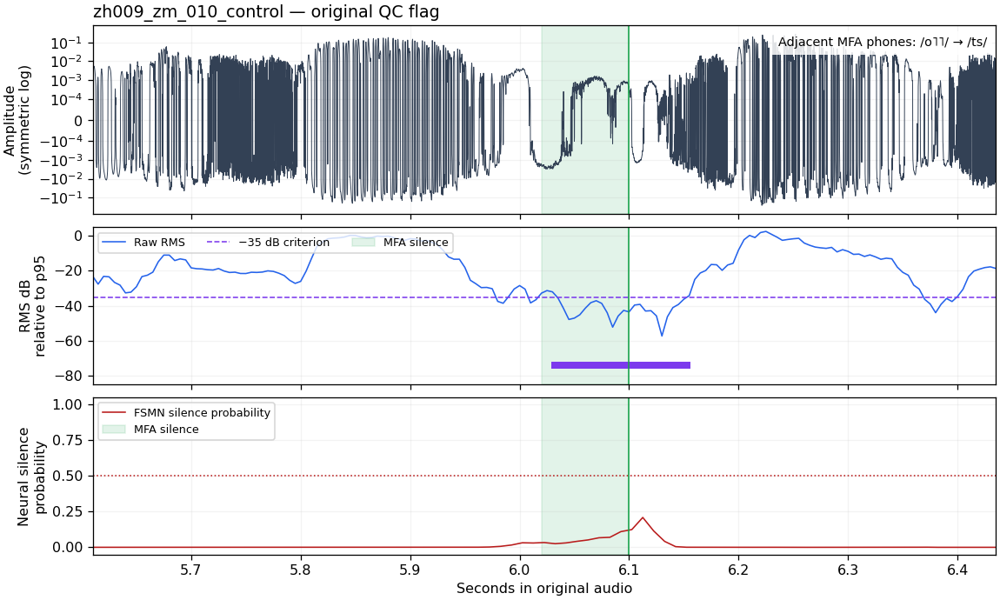
zh009_zm_010_joke
MFA 70 ms · RMS 115 ms · RMS_endpoint_inside_first_HMM_phone
RMS resumes 57.5 ms after HMM, inside its initial /ts/ interval. Consistent with low-energy phone inclusion; the HMM label is a model hypothesis, not independent truth.
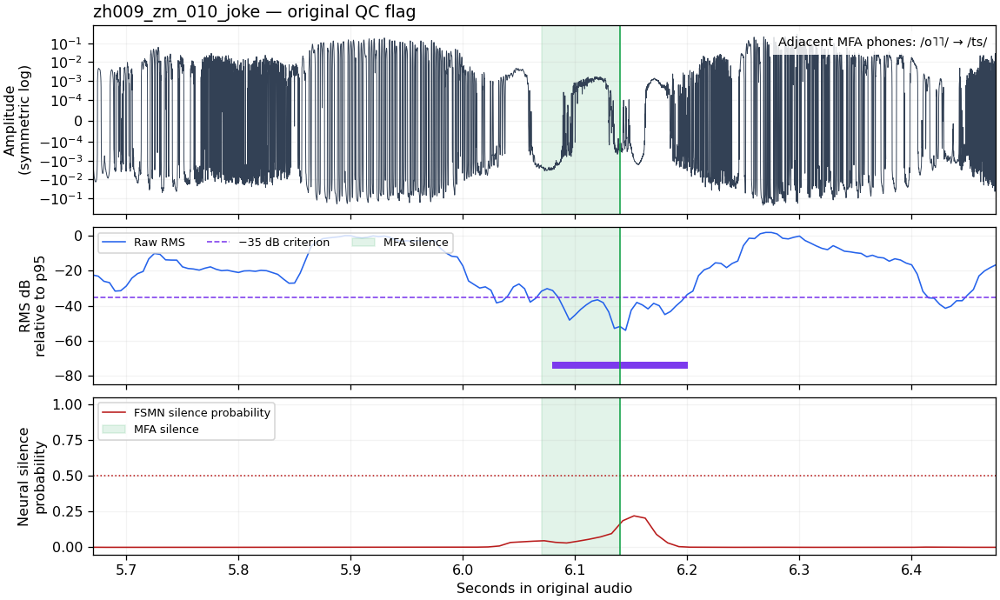
zh010_zm_010_control
MFA 190 ms · RMS ambiguous · fragmented_RMS_subsonic_energy
Multiple quiet intervals; the HMM-region spectrum peaks at 10.5 Hz. Filtering does not establish an accurate pause.
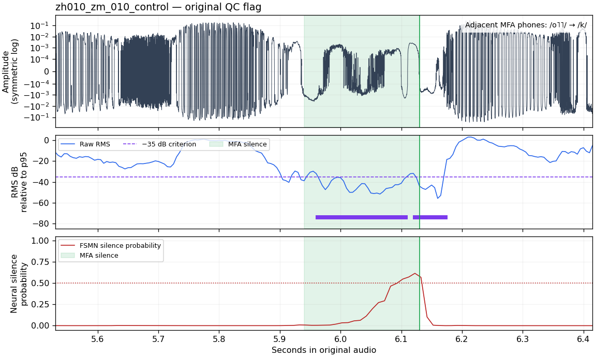
zh010_zm_010_joke
MFA 180 ms · RMS ambiguous · fragmented_RMS_subsonic_energy
Multiple quiet intervals; the HMM-region spectrum peaks at 11.1 Hz. Filtering does not establish an accurate pause.
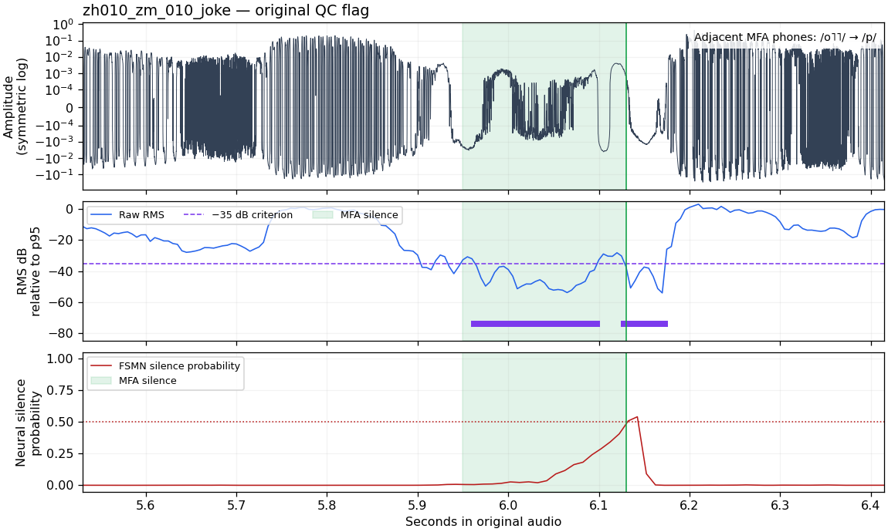